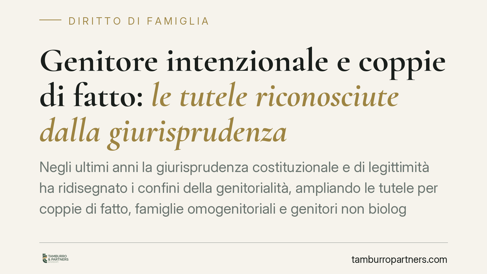

Genitore intenzionale e coppie di fatto: le tutele riconosciute dalla giurisprudenza
Negli ultimi anni la giurisprudenza costituzionale e di legittimità ha ridisegnato i confini della genitorialità, ampliando le tutele per coppie di fatto, famiglie omogenitoriali e genitori non biologici. Non sempre si tratta di nuove leggi: spesso è l'interpretazione delle norme esistenti a evolversi. Comprendere questa distinzione è decisivo per chi deve tutelare la propria posizione familiare.

Il quadro: quando cambia la legge e quando cambia l'interpretazione
È importante distinguere due fenomeni diversi.
Il cambiamento normativo avviene quando il legislatore introduce o modifica una norma: è il caso del congedo di paternità obbligatorio, disciplinato dall'art. 27-bis del d.lgs. n. 151/2001 (introdotto dal d.lgs. n. 105/2022).
Il cambiamento interpretativo avviene invece quando i giudici — in particolare Corte Costituzionale e Corte di Cassazione — leggono in modo nuovo norme già esistenti. Buona parte delle tutele oggi riconosciute alle famiglie non tradizionali nasce proprio da questa evoluzione, non da riforme legislative.
Inquadramento normativo
Sul piano dell'accesso alla procreazione medicalmente assistita (PMA), l'art. 5 della legge n. 40/2004 individua i requisiti soggettivi, riservando la tecnica a coppie di sesso diverso, coniugate o conviventi. Questa è la cornice di accesso, ma non è la disposizione su cui si fonda il riconoscimento del cosiddetto genitore intenzionale.
Il genitore intenzionale è chi ha condiviso e voluto il progetto genitoriale pur non avendo un legame biologico con il figlio. Il suo riconoscimento passa attraverso la disciplina della trascrizione degli atti (artt. 8 e 9 della legge n. 40/2004) e, soprattutto, attraverso la giurisprudenza costituzionale e delle Sezioni Unite sulla continuità dello status filiationis, cioè sulla tutela del rapporto già formatosi tra genitore e figlio. Vanno qui richiamati, tra gli orientamenti più rilevanti, gli interventi della Corte Costituzionale in materia (in particolare le pronunce del 2021 che hanno segnalato al legislatore l'insufficienza degli strumenti disponibili) e le decisioni delle Sezioni Unite della Cassazione sul valore dell'adozione in casi particolari.
Sul versante dei crediti familiari, l'art. 2941 cod. civ. prevede cause di sospensione della prescrizione tra coniugi e in altri rapporti qualificati: la tendenza giurisprudenziale è a estenderne la ratio protettiva anche a situazioni in cui il rapporto affettivo consolidato giustifica una tutela analoga.
Implicazioni pratiche
Per le coppie di fatto, l'evoluzione riguarda soprattutto i diritti patrimoniali e la possibilità che alcune tutele pensate per il matrimonio vengano estese in via interpretativa. Nulla è automatico: molto dipende dalla prova del rapporto e dalla singola fattispecie.
Per le famiglie omogenitoriali, il tema centrale resta il riconoscimento giuridico del legame con il genitore intenzionale. Gli strumenti oggi più solidi restano la trascrizione degli atti formati all'estero, ove ammissibile, e l'adozione in casi particolari. Si tratta di un terreno ancora in movimento, dove la soluzione varia in base al momento della nascita, al luogo e alle modalità di formazione dell'atto.
Per i lavoratori genitori, occorre non confondere due istituti distinti: il congedo di paternità obbligatorio (art. 27-bis d.lgs. n. 151/2001) e il congedo parentale (artt. 32 ss. dello stesso decreto). Il primo spetta al padre nel periodo perinatale; il secondo è un diritto di astensione facoltativa fruibile da entrambi i genitori. La tendenza verso la parità di trattamento riguarda soprattutto l'estensione di queste tutele oltre il modello familiare tradizionale.
Attenzione: orientamenti in evoluzione
Le pronunce citate esprimono orientamenti, non regole immutabili. La materia è tuttora in trasformazione e le soluzioni non sono uniformi: due situazioni apparentemente simili possono ricevere risposte diverse a seconda dei fatti, delle date e della documentazione disponibile. Ogni valutazione va quindi calata sul caso concreto.
Cosa fare in concreto
- Ricostruisci la cronologia: raccogli atti di nascita, provvedimenti esteri, documentazione della PMA e ogni prova del progetto genitoriale condiviso.
- Verifica gli strumenti disponibili per il tuo caso specifico (trascrizione, adozione in casi particolari, riconoscimento), tenendo conto di data e luogo di formazione degli atti.
- Distingui gli istituti lavoristici: accerta a quale congedo hai diritto — paternità o parentale — e i relativi termini di fruizione.
- Monitora i termini: alcuni diritti, patrimoniali e non, sono soggetti a prescrizione o a scadenze procedurali. È opportuno valutare per tempo la propria posizione.
- Chiedi una valutazione tecnica prima di avviare procedure che incidono in modo stabile sullo status del figlio.
---
*Contributo informativo a cura di Tamburro & Partners Avvocati. Non costituisce parere legale.*
Ogni famiglia ha il suo equilibrio.
Separazione, divorzio, affidamento, assegno: se vuoi un confronto riservato su una specifica situazione, scrivi allo studio. Ti rispondiamo entro un giorno lavorativo.